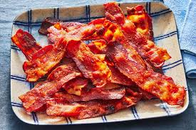

The PERFECT Bacon

Description
This recipe makes cooking bacon simple, quick and passive!
Almost all hands free except for putting into the oven!
Ingredients
- Thick cut bacon
- Cookie Sheet
- Aluminum Foil
Directions
- Line cookie sheet with aluminum foil
- Place bacon on sheet in a single layer
- Place sheet in oven on middle rack
- Turn oven to 400 degrees farenheit
- Cook bacon for 25 minutes, flipping halfway
- Once complete, remove sheet from oven, and remove bacon to paper towel lined
plate to drain for 2-3 minutes.
- Serve with eggs for breakfast or use on burgers and sandwiches for extra
flavour!!